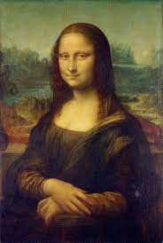
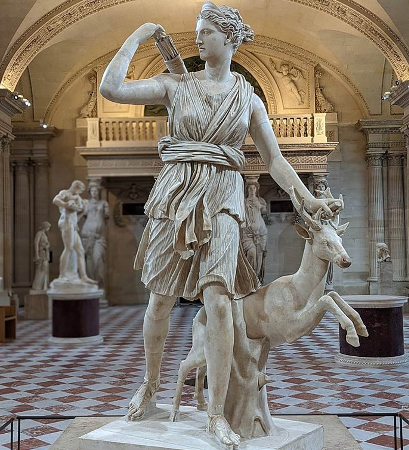
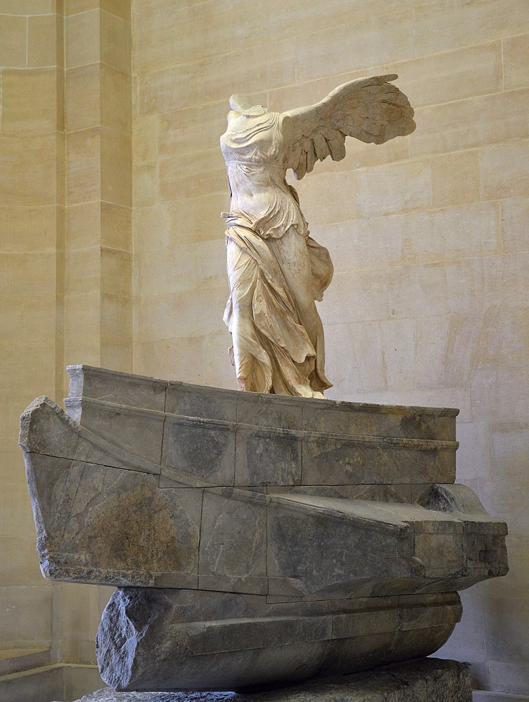
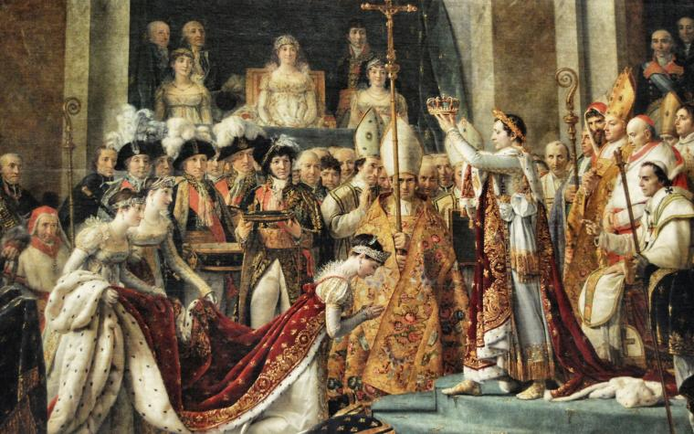
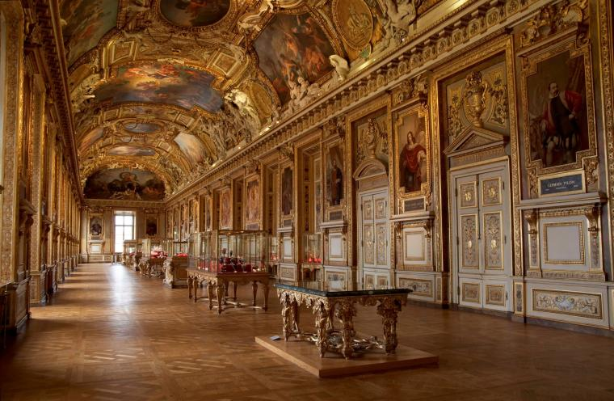
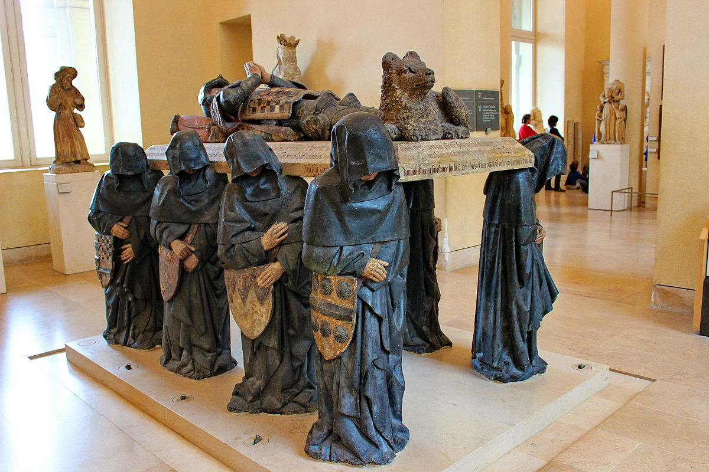

WELCOME TO LOUVRE
There are plenty of good reasons to visit the Louvre! So many works of art to discover in this fabulous museum that used to be a palace! So plan your visit in advance to make the most of it. Why not pick one of our visitor trails to follow a theme-based tour? And when you need a break, where better than the museum’s restful gardens?
Color Count: 0
DIVE INTO THE LOUVRE





